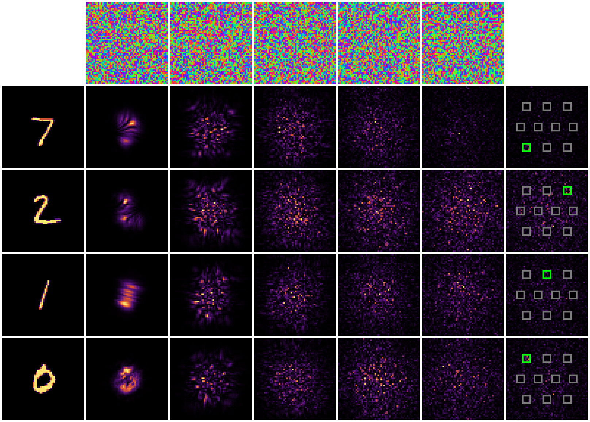

A network made of light
Could light itself recognize a handwritten digit, with no neurons and no multiplications?
| Term | What kind of thing | Everyday picture | Where it shows up |
|---|---|---|---|
| Phase (delay) | A number per cell | Making part of a crowd walk a step later so they arrive out of sync | The 15,680 trained numbers |
| Plate 56 × 56 | A size | A window with 3,136 panes, each a different thickness of glass | 5 plates |
| Detector | A measurement | A light meter; the brightest of 10 wins | The answer |
| Pass (epoch) | A count | Reading the whole textbook once | 3 passes |
| Simulation | Code + math | A weather forecast: the computer calculates what light would do | Why it was slow |
When light waves meet, they add up (bright) or cancel (dark). This is called interference. If we place transparent plates that delay the light a little in each spot, we can steer where the bright spots land. Train the plates so each digit's light lands on its own detector.
Real-world version: in 2018 a UCLA team 3D-printed such plates and they recognized digits using only light (Lin and colleagues, Science).
The digit becomes light: bright where the ink is, like a flashlight through a stencil.
It passes 5 plates. Each plate is a 56 × 56 grid of cells. A cell only delays the light (changes its phase); it blocks nothing.
The waves interfere and get scrambled into complex patterns.
10 detectors catch the light. The brightest one is the answer.
Training: the 15,680 delays (5 × 56 × 56) start random. For each example the computer checks where the light landed and nudges every delay so a bit more light reaches the right detector.
Light alone learned to read digits: 90.9% correct on 10,000 new digits. Random guessing gets 10%.

- Top row: the 5 trained plates. They look like noise, but that pattern is the knowledge.
- Each row: one digit (7, 2, 1, 0), left to right through the plates.
- Last column: the detectors. Green box = right answer. All 4 correct.
- This was a simulation: the laptop calculated what light would do. That's why it was slow. Real printed plates would answer at the speed of light with almost no power.
- The right detector only gets a bit more light than the others, so a real version would be sensitive to noise.
- Our 90.9% matches the ~92% UCLA reported in simulation, a good sign the code is right.